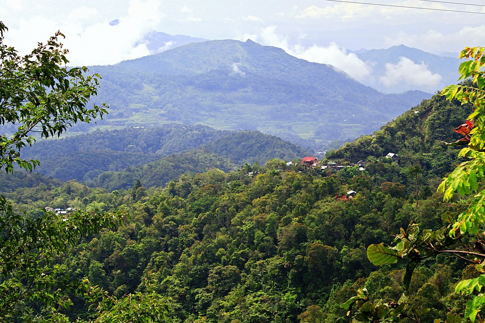

About Hingyon
The name “HINGYON” was derived from the Ifugao term “HING-NGIYON”, meaning a diversion from a major route. The main route then, and even now, is the national road connecting the municipalities of Lagawe and Banaue and the diversion road is at Barangay Piwong, now a part of Hingyon, going towards the municipal mainland.
Cultural Background of Hingyon
If legend is to be believed, the people of Hingyon, like all other Ifugaos, are descendants of the first man and woman on earth. The man is named Wigan and the woman Bugan. They had children and the intermarriages of their offspring produced the people of Ifugao. In Hingyon, throughout the generations, there emerged three (3) distinct tribes. These are the Munkalyon Tribe (barangays Anao, Namulditan,Bangtinon, Bitu, and Piwong), the Mun-alyon Tribe (barangays Cababuyan North, Cababuyan South, O-ong, Ubuag, Umalbong, Mompolia and Poblacion), and the Ayangan tribe of Humalophop, Mompolia. The distinction is reflected in the pronunciation and intonation of the Ifugao dialect.
Based on accounts of American anthropologists like Samuel Kane, Harold Conklin, and Otley Beyer after Spain seceded the Philippines to the Americans in the early 1900’s, the early people of Hingyon (who were then included in Banaue and Lagawe) were pagans. They adored idols and practiced many rituals. Almost all occasions, whether merry making or mourning, call for the butchering of chickens, pigs or carabaos and drinking of the “baya” (native ricewine). In fact, one indication of the socio-economic status of an individual (or household) is the number of pigs or carabaos he has butchered, since this practice of butchering usually goes hand in hand with the collective wide area of his rice terraces. The more terraces he owned, the wealthier he is, the more respected he is in the village and the adjoining villages. Perhaps to inform strangers who come to the village, the house of the “kadangyan” (rich) is adorned by the skulls of carabaos butchered in the past.
As modernization came in, it brought changes in the villages including perceptions of people. Due to economic constraints (which has a direct impact to the butchering of ritual animals) and the entry of modern education and religion, many rituals have become things of the past. For instance, a new concept of “kadangyan” emerged in the villages. No longer were those who owned the widest terraces considered as rich, but rather, those who owned much money, or who earned much cash whether local or abroad. The terraces which were the symbols of wealth became symbols of hard labor, illiteracy, and poverty. The rituals and icons intended to please the “gods” for a bountiful harvest became idols of paganism and acts of worshipping them were considered “unchristian”. Respect shifted from the “kadangyan” or “muntonah” (who owned the widest terraces in the village) to people considered “educated”, and those who had much money.
Sooner, Bannawor became a by-word through the Spanish, Japanese and American times. It had not only became a by-word but has also extended the name for the whole place.
And after sometimes, Bannawor evolved into “BANAUE” brought about by language accent.
During the Spanish regime the status of government was not fully established. But in 1901 under the American regime, it became a municipal district. Then on June 25, 1963, by virtue of Executive Order No. 42, Banaue became a full pledge municipality.
Government
Hingyon consisted then of twelve (12) barangays which were formerly parts of the municipalities of Lagawe and Banaue. On September 6, 1991, by virtue of Sangguniang Panlalawigan Resolution No.236, Series of 1991, Barangay Cababuyan was divided into Cababuyan North and South, thus, there became twelve (12) Barangays of the municipality
Barangays
- Anao
- Bangtinon
- Bitu
- Cababuyan
- Mompolia
- Namulditan
- Northern Cababuyan
- O-ong
- Piwong
- Poblacion
- Ubuag
- Umalbong
Landmass of Hingyon
The municipality has a land area of 62.02 square kilometers or 23.95 square miles which constitutes 2.37% of Ifugao's total area. Its population as determined by the 2020 Census was 9,930. This represented 4.79% of the total population of Ifugao province, or 0.55% of the overall population of the Cordillera Administrative Region. Based on these figures, the population density is computed at 160 inhabitants per square kilometer or 415 inhabitants per square mile